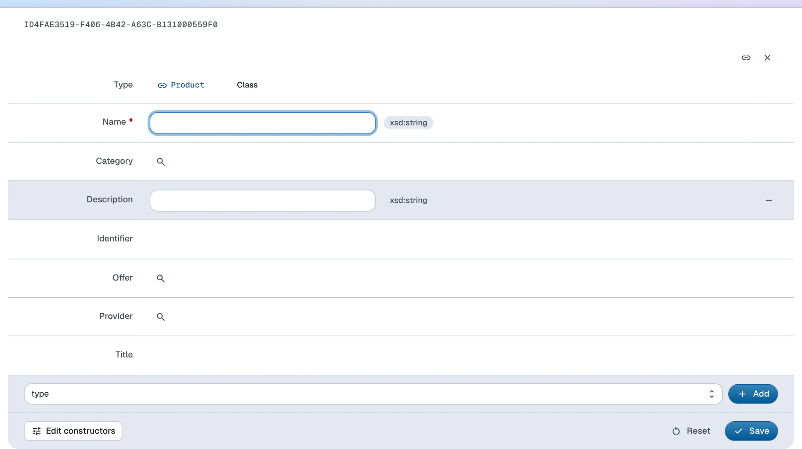

Create instances
Learn how to create instances of built-in and user-defined classes
Built-in classes (such as Container, Item, SELECT etc.) ship with system ontologies in LinkedDataHub while user-defined classes come from ontologies imported by the user (see the user guide on changing the model on how to do that).
To create class instances, you have to be in properties mode.
You can only create instances of classes that have constructors.
Built-in classes
To create instances of built-in classes, follow these steps:
- Click the Create dropdown at the bottom of the page
- In the dropdown list that appears, click on the menu item of the class you want to create an instance for. An editing form will open.
- Fill out the fields in the form that appears. Mandatory properties are rendered in bold; the form cannot be saved without them.
- Click Save
- If a value is missing or malformed, an error message appears and the offending property is highlighted. Fix it and save again.
You will be redirected to the document of the newly created instance.
User-defined classes
To create instances of user-defined classes, follow these steps:
- Click the Create dropdown at the bottom of the page
- Click on Instance in the dropdown list that appears. An editing form will open.
- In the form's Type field, click the typeahead input, type the class name — for example Product on the Northwind dataspace — and select the class from the list
- Continue as with the built-in classes: fill out the fields and click Save
When you create a Product this way, its constructor renders name and identifier inputs plus category and supplier typeaheads — the form is entirely constructor-driven.

Instances are plain RDF, so the CLI equivalent is appending a description to a document
with ldh post. Creating a new product in its own document — --primary-topic makes the document about the #this resource, and the post describes it:
doc=$(ldh create item \
--container "${LDH_BASE}products/" \
--title "Masala Chai" \
--slug 78 \
--primary-topic '#this')
ldh post -t text/turtle "$doc" <<EOF
@prefix schema: <https://schema.org/> .
<${doc}#this> a schema:Product ;
schema:name "Masala Chai" ;
schema:identifier "78" ;
schema:category <${LDH_BASE}categories/1/#this> .
EOF
The posted data is validated against the class constraints the same way form submissions are — leaving out schema:name gets the request rejected with 422 Unprocessable Entity.